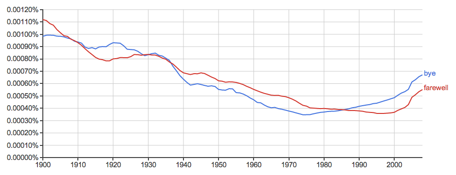

Since we had look at the correlation between the greeting of a converstaion we decided to look at the correlation of two diffrent terms that express the ending of a conversation. We took a look at the word "bye" and at the word "farewell". What we saw was that there was a strong correlation between the words and that they seem to follow the same pattern.
